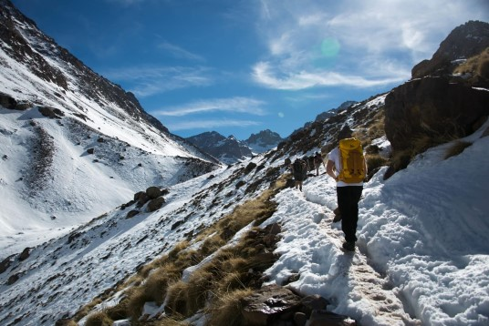

Mountains Chain of Tacheddirt
Tacheddirt (also Tachdirt) is a small village high up (2314m) in the Atlas Mountains of Morocco.

Mountains of Toubkal
he highest peak in the Atlas Mountains, Morocco, and North Africa.
Hike Eastward, up the valley further to Tizi n' Tacheddirt (3230m). This way you'll see locals from the village collecting small bushes for firewood.
Towering 13,751 feet above sea level, Mt. Toubkal (occasionally written Mt. Tubkal) is not only the highest mountain in central Morocco, but also the highest in the Atlas Range and all of Northern Africa..